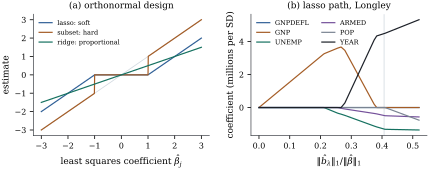
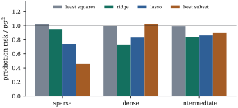

27.4 The lasso
Ridge regression and principal components shrink, but
neither selects (Exercise (A1)). Subset
selection does, but it is a combinatorial search whose
output jumps when the data change slightly. Tibshirani
(1996) replaced the squared penalty of ridge by the sum
of the absolute coefficients. The resulting
lasso (“least absolute shrinkage and
selection operator”) is convex, like ridge, and sets
some coefficients exactly to zero, like subset
selection; Chen, Donoho and Saunders (1998) introduced
the same criterion as basis pursuit denoising. The
theory for
27.4.1. Definition and optimality conditions
The conventions of Section
27.2 remain:
For
This is the penalized form; the
constrained form minimizes
that is,
The factor
Let
(a)
(b)
(c) All minimizers have the same fitted vector
(d)
(e) Every minimizer
Proof.
(a)
(b) Sufficiency. Let
(c) Let
(d) At
(e) This is the remark on penalized and constrained forms in Section 27.2 with
By (b) and (c), all solutions share the inner
products
The constrained forms show why the lasso produces
exact zeros and ridge does not. The constrained estimate
is where the smallest contour of
27.4.2. The orthonormal case: soft thresholding
Under an orthonormal design the lasso, ridge
regression and subset selection are all explicit. Define
the soft and hard
thresholding functions
Suppose
(a) (Lasso.) The unique minimizer of Eq. 27.4.1 is given by
(b) (Ridge.) The minimizer of Eq. 27.2.1 is
(c) (Subset selection.) The minimizers of
Proof. Since
Figure 27.4.1(a) draws
the three rules. Ridge shrinks every estimate by the
same factor; hard thresholding keeps large estimates and
kills small ones, with a jump at
27.4.3. The lasso path
As
Suppose that for all
Proof. The KKT equations for
So the path is made of line segments joined where a variable enters or leaves the active set, and the whole path costs about as much as one least squares fit (Osborne, Presnell and Turlach 2000; Efron, Hastie, Johnstone and Tibshirani 2004; Section 30.5 returns to this). A variable leaves when its affine path reaches zero, which happens with correlated regressors but never under an orthonormal design (Exercise (B3)).
27.4.4. Computing the lasso by coordinate descent
As a function of one coordinate
Fix
(a) The minimizer of
(b) If
Proof.
- (a) With
- (b) A fixed point
has
Algorithm. Cyclic
coordinate descent for the lasso. Start from
Each update lowers
For the standardized Longley data,
Leave-one-out cross-validation, refitting the path
without each year in turn, chooses
The script checks the solutions at five values of

import numpy as np
import statsmodels.api as sm
def soft(z, t):
"""Soft thresholding: sign(z) * max(|z| - t, 0)."""
return np.sign(z) * np.maximum(np.abs(z) - t, 0.0)
def lasso_cd(X, y, lam, b=None, tol=1e-10, max_sweeps=100_000):
"""Cyclic coordinate descent for (1/2)||y - X b||^2 + lam ||b||_1."""
p = X.shape[1]
b = np.zeros(p) if b is None else b.copy()
r = y - X @ b # current residual
sq = np.sum(X ** 2, axis=0) # ||x_j||^2
for sweep in range(1, max_sweeps + 1):
biggest = 0.0
for j in range(p):
z = X[:, j] @ r + sq[j] * b[j] # x_j^T (partial residual without j)
new = soft(z, lam) / sq[j]
if new != b[j]:
r -= X[:, j] * (new - b[j])
biggest = max(biggest, abs(new - b[j]) * np.sqrt(sq[j]))
b[j] = new
if biggest < tol:
break
return b, sweep
def kkt_violation(X, y, b, lam):
"""Largest violation of the KKT conditions X^T (y - X b) = lam * s, s in the subdifferential."""
g = X.T @ (y - X @ b)
active = b != 0
return max(np.max(np.abs(g[active] - lam * np.sign(b[active])), initial=0.0),
np.max(np.abs(g[~active]) - lam, initial=0.0))The second cell computes the path on a grid of
data = sm.datasets.longley.load_pandas().data
names = ["GNPDEFL", "GNP", "UNEMP", "ARMED", "POP", "YEAR"]
Z = data[names].to_numpy()
y = data["TOTEMP"].to_numpy()
n, p = Z.shape
X = (Z - Z.mean(axis=0)) / Z.std(axis=0, ddof=1)
yc = y - y.mean()
lam_max = np.max(np.abs(X.T @ yc)) # smallest lam with b = 0
lams = lam_max * np.logspace(0, -3, 61)
path, b = [], np.zeros(p)
for lam in lams: # warm starts along a decreasing grid
b, _ = lasso_cd(X, yc, lam, b, tol=1e-6)
path.append(b.copy())
path = np.array(path)
first = {names[j]: np.argmax(path[:, j] != 0) for j in range(p) if np.any(path[:, j] != 0)}
entry = sorted(first, key=first.get) # variables in order of entry
print(f"lambda_max = {lam_max:.0f}; order of entry:", entry)
print("GNP coefficient along the path:", np.round(path[::6, 1], 0))27.4.5. Lasso, ridge and subset selection compared
Theorem 27.4.2 suggests that hard thresholding suits a few large coefficients among zeros, proportional shrinkage many moderate ones, and soft thresholding lies between. A simulation with correlated regressors tests this.
Fix a design with
| Pattern | least squares | ridge | lasso | best subset |
|---|---|---|---|---|
| sparse | 1.02 | 0.95 | 0.74 | 0.46 |
| dense | 0.99 | 0.73 | 0.83 | 1.03 |
| intermediate | 0.99 | 0.84 | 0.86 | 0.90 |
Best subset selection is far ahead in the sparse case
and worst in the dense case, where it cannot shrink and
finds no zeros; ridge is the reverse; the lasso is never
best and never worst. In the intermediate case the
paired difference between the lasso and ridge is

The cell below reruns the sparse scenario with
import itertools
import numpy as np
def soft(z, t):
return np.sign(z) * np.maximum(np.abs(z) - t, 0.0)
def lasso_cd(X, y, lam, b=None, tol=1e-8, max_sweeps=10_000):
"""Cyclic coordinate descent for (1/2)||y - X b||^2 + lam ||b||_1."""
p = X.shape[1]
b = np.zeros(p) if b is None else b.copy()
r = y - X @ b
sq = np.sum(X ** 2, axis=0)
for _ in range(max_sweeps):
biggest = 0.0
for j in range(p):
new = soft(X[:, j] @ r + sq[j] * b[j], lam) / sq[j]
if new != b[j]:
r -= X[:, j] * (new - b[j])
biggest = max(biggest, abs(new - b[j]))
b[j] = new
if biggest < tol:
break
return b
rng = np.random.default_rng(2027)
n, p, sigma = 50, 10, 2.0
Sigma = 0.5 ** np.abs(np.subtract.outer(np.arange(p), np.arange(p)))
X = rng.multivariate_normal(np.zeros(p), Sigma, size=n)
X = (X - X.mean(axis=0)) / np.sqrt(np.mean((X - X.mean(axis=0)) ** 2, axis=0)) # ||x_j||^2 = n
U, d, Vt = np.linalg.svd(X, full_matrices=False)
subsets = [list(S) for k in range(p + 1) for S in itertools.combinations(range(p), k)]
ridge_grid = np.logspace(-2, 4, 40)
scenarios = {
"sparse": np.r_[3.0, -2.0, 1.5, np.zeros(p - 3)],
"dense": 0.5 * (-1.0) ** np.arange(p),
"intermediate": np.r_[1.0, -1.0, 1.0, -1.0, 1.0, np.zeros(p - 5)],
}
def fits(y):
"""Candidate fitted vectors of each method along its tuning path."""
c = U.T @ y
out = {"least squares": [U @ c]}
out["ridge"] = [U @ (d ** 2 / (d ** 2 + lam) * c) for lam in ridge_grid]
lam_max = np.max(np.abs(X.T @ y))
b, lasso = np.zeros(p), []
for lam in lam_max * np.logspace(0, -3, 30):
b = lasso_cd(X, y, lam, b)
lasso.append(X @ b)
out["lasso"] = lasso
best = {} # best subset of each size, by residual sum of squares
for S in subsets:
fit = X[:, S] @ np.linalg.lstsq(X[:, S], y, rcond=None)[0] if S else np.zeros(n)
rss = np.sum((y - fit) ** 2)
if len(S) not in best or rss < best[len(S)][0]:
best[len(S)] = (rss, fit)
out["best subset"] = [best[k][1] for k in range(p + 1)]
return out
def run(beta, reps, seed=1):
"""Mean of ||X b - X beta||^2 / (p sigma^2) for each method, tuned on a validation copy."""
gen = np.random.default_rng(seed)
mu = X @ beta
loss = {m: [] for m in ["least squares", "ridge", "lasso", "best subset"]}
for _ in range(reps):
y = mu + sigma * gen.normal(size=n)
y_val = mu + sigma * gen.normal(size=n)
for m, cands in fits(y).items():
chosen = min(cands, key=lambda f: np.sum((y_val - f) ** 2))
loss[m].append(np.sum((chosen - mu) ** 2) / (p * sigma ** 2))
return {m: np.array(v) for m, v in loss.items()}
quick = run(scenarios["sparse"], reps=10)
print({m: round(float(v.mean()), 2) for m, v in quick.items()})27.4.6. Exercises
A. Check your understanding
Suppose
Solution. Try
With an orthonormal design and
B. Practice
Suppose
Solution. Such a
Let
Solution. The log posterior is
Under an orthonormal design, describe the lasso path:
show that it is piecewise linear with kinks at
C. Going deeper
In the orthonormal case with normal errors, show that
Show that for every